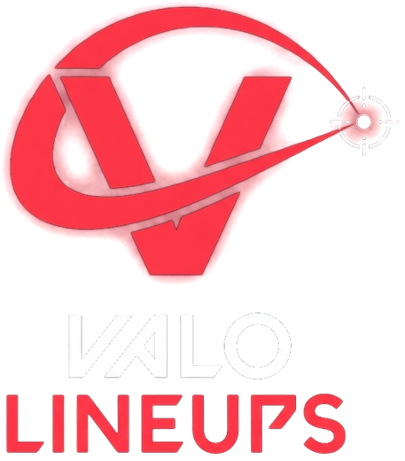

✓
Adresse mail confirmée
Ton compte Val LineUp est activé.
Retourne dans l’application et connecte-toi avec ton adresse mail et ton mot de passe.
Tu peux fermer cette page.
!
Lien expiré ou déjà utilisé
Essaie de te connecter dans l’application : si ton adresse était déjà confirmée, ça fonctionnera. Sinon, recrée ton compte pour recevoir un nouveau lien.
Choisis un nouveau mot de passe
✓
Mot de passe modifié
Retourne dans l’application et connecte-toi avec ton nouveau mot de passe.
Tu peux fermer cette page.
Val LineUp n’est pas approuvé par Riot Games et ne reflète pas les opinions de Riot Games ni de quiconque officiellement impliqué dans la production ou la gestion des propriétés de Riot Games. Riot Games et toutes les propriétés associées sont des marques commerciales ou des marques déposées de Riot Games, Inc.